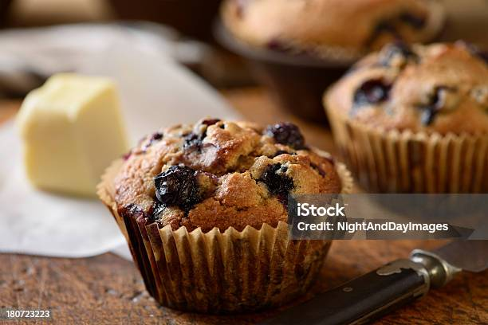

Blueberry Muffins

Description
In this recipe, we are gonna learn how to make blueberry muffins. I like the taste of blueberries inside the sweet
muffin. It gives additional flavor. Let's look at the ingredients list below.
Ingredients
- 1 and half cups of all purpose flour
- ¾ cup white sugar
- 2 teaspoons baking powder
- ½ teaspoon salt
- ⅓ cup vegetable oil
- 1 large egg
- ⅓ cup milk, or more as needed
- 1 cup fresh blueberries
Crumb Toppings
½ cup white sugar
⅓ cup all-purpose flour
¼ cup butter
1 ½ teaspoons ground cinnamon
Directions
- Preheat the oven to 400 degrees F (200 degrees C). Grease 8 muffin cups or line with paper liners.
- Whisk flour, sugar, baking powder, and salt together in a large bowl.
- Pour oil into a small liquid measuring cup. Add egg and enough milk to reach the 1-cup mark; stir until combined.
- Pour into flour mixture and mix just until batter is combined. Fold in blueberries; set batter aside.
-
Prepare crumb toppings
-
To make the crumb topping: Combine sugar, flour, butter, and cinnamon in a small bowl. Mix with a fork until crumbly.
- Spoon batter into the prepared muffin cups, filling right to the top. Sprinkle with crumb topping.
- Bake in the preheated oven until a toothpick inserted in the center of a muffin comes out clean, 20 to 25 minutes
Home